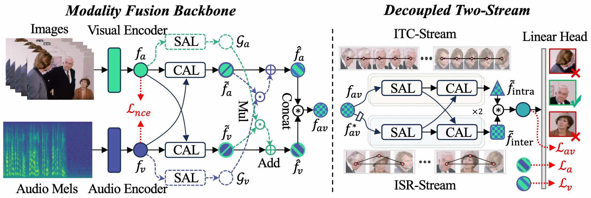

Audio-Visual Speaker Detection (AVSD) hinges on modeling both individual temporal continuity and inter-personal social context. Existing coupled architectures struggle to reconcile these tasks in shared representation spaces due to conflicting inductive biases: temporal modeling favors low-frequency smoothness, while inter-personal interaction requires high-frequency discriminability. We propose D2Stream, a decoupled dual-stream framework that explicitly isolates these functionalities into parallel, task-specific branches. Specifically, the Intra-speaker Temporal Continuity (ITC) stream captures longitudinal stability, whereas the Inter-personal Social Relation (ISR) stream models transversal social cues. Quantitative gradient analysis reveals an evolutionary divergence in update directions, stabilizing at 86.1°, which confirms the inherent task conflict and the effectiveness of our structural decoupling. D2Stream breaks the long-standing performance plateau, achieving a state-of-the-art 95.6% mAP on AVA-ActiveSpeaker and superior generalization on Columbia ASD, all within a lightweight and efficient design.

Four representative video samples for the Full model are shown below.
Four representative video samples for the Only_ITC ablation are shown below.
Four representative video samples for the Only_ISR ablation are shown below.